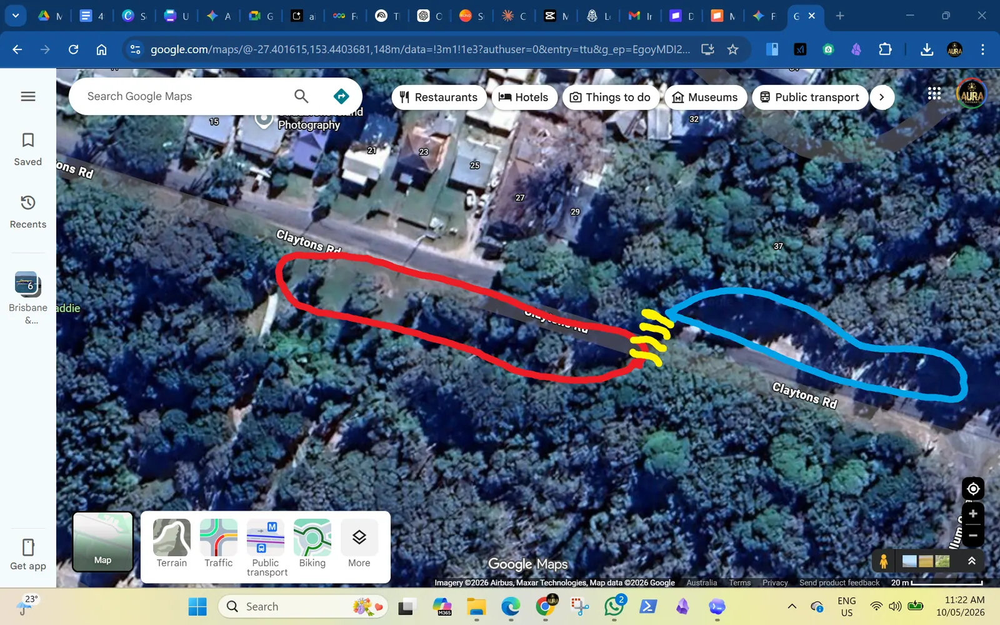

Activity brings people
Older locals, families, teens, campers, walkers and visitors get a free, visible place to move.
Amity Point Recreation Reserve - Claytons Road - Minjerribah
The activity park would draw more people across Claytons Road. That makes the crossing, speed calming, pothole repair, water check and safer visitor movement part of the same story instead of five separate little arguments.

Why combine it?
Older locals, families, teens, campers, walkers and visitors get a free, visible place to move.
More movement across Claytons Road makes a zebra crossing and calmer traffic easier to justify.
The potholes, unsealed parking edge and bus turnaround can be treated as part of access, not an afterthought.
A drinking fountain only makes sense if the pipe route, backflow, drainage and maintenance stack up.
Koala tours and visitors often look up into trees, stop for photos and drift close to the road without watching traffic.
A clearer parking zone, crossing and park path could shift families away from ad hoc roadside stops and 4WD shortcuts.

The place
The site does not need a cramped cluster of basic bars. It can balance space, shade, movement, rest, access and wildlife-aware traffic calming. The first job is to gather local observations cleanly, then use them to shape a better layout.
Start a survey noteCommunity invitation
Residents can add site notes. Suppliers and tradies can provide comparable quotes. Volunteers can offer safe working bee tasks. The honour board can show support publicly without pretending every job is suitable for volunteers.